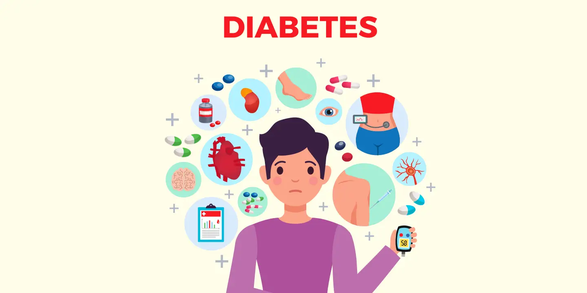

Additional Based Analysis

Diabetes Additional Based Analysis
Determine which variables (e.g., Diet Quality, Sleep Quality, Family History) have the most significant impact on diabetes management and patient outcomes.
Focus on patients with low serum creatinine levels to understand its correlation with other health indicators and its impact on diabetes. Segment the patient population into distinct groups based on similar characteristics and health indicators to tailor treatment approaches.
Graphical Represtation